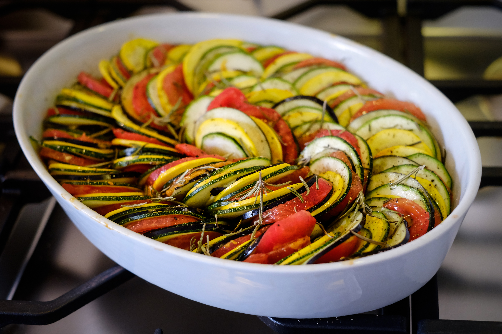

Ratatouille

Credit: © Stijn Nieuwendijk available here.
Description
This ratatouille recipe makes the elegant French vegetable dish served up in the Disney movie of the same name.
Long and narrow slices of colorful eggplant, zucchini, and summer squash work best and turn out tender every time!
Ingredients
- 1 (6 ounce) can tomato paste
- ½ onion, chopped
- ¼ cup minced garlic
- ¾ cup water
- 4 tablespoons olive oil, divided
- salt and ground black pepper to taste
- 1 small eggplant, trimmed and very thinly sliced
- 1 zucchini, trimmed and very thinly sliced
- 1 yellow squash, trimmed and very thinly sliced
- 1 red bell pepper, cored and very thinly sliced
- 1 yellow bell pepper, cored and very thinly sliced
- 1 teaspoon fresh thyme leaves, or to taste
- 3 tablespoons mascarpone cheese (Optional)
Home